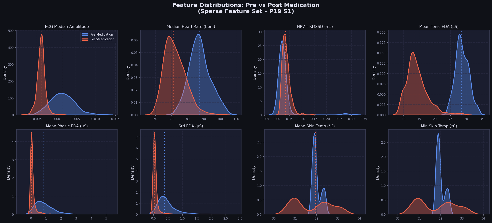
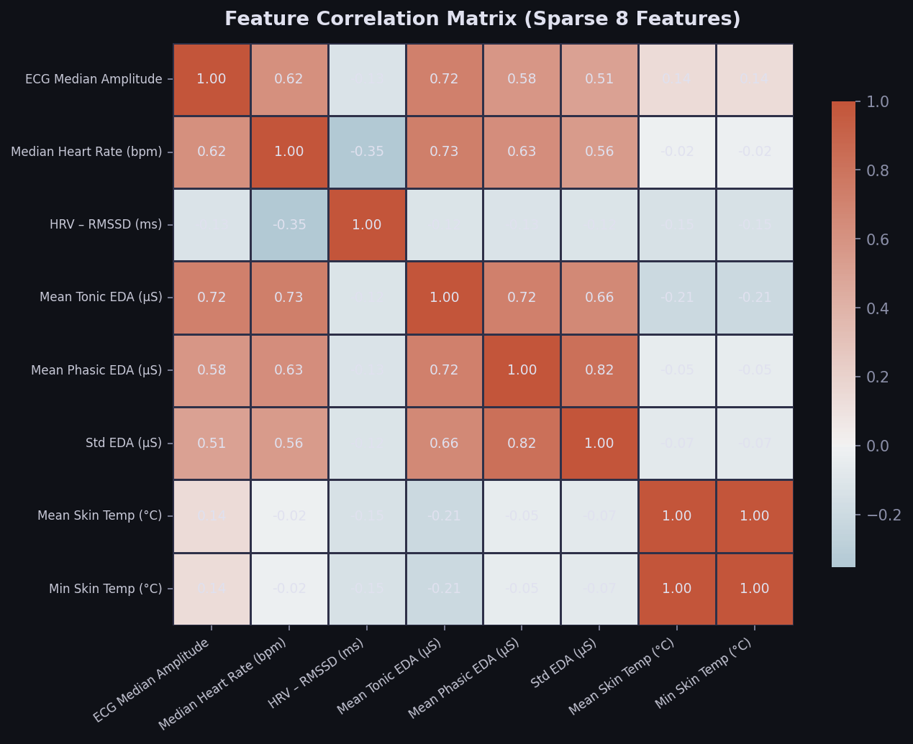
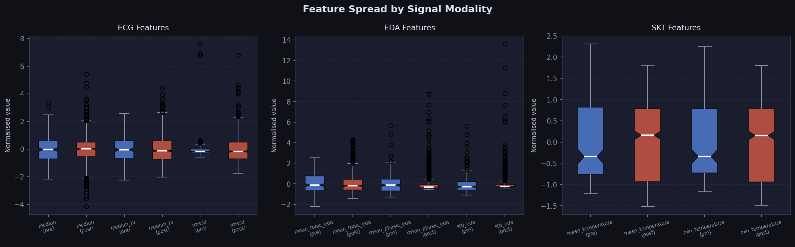
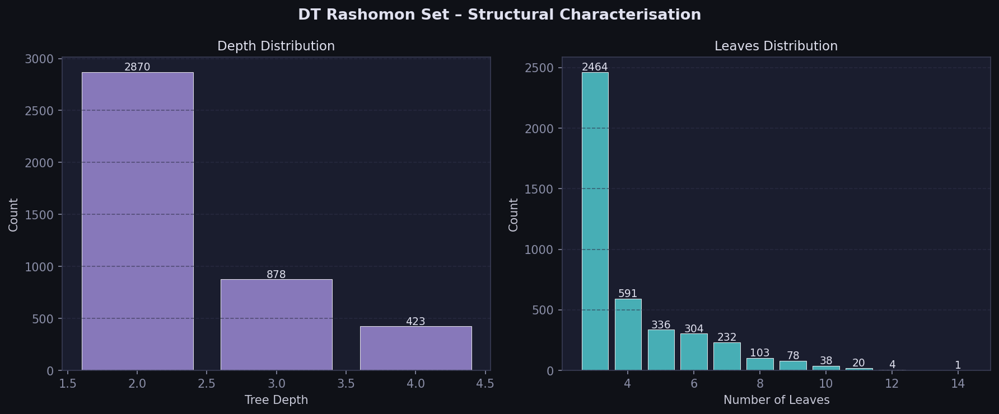
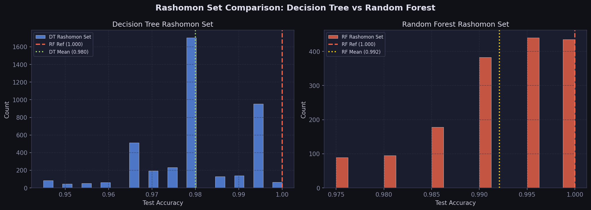
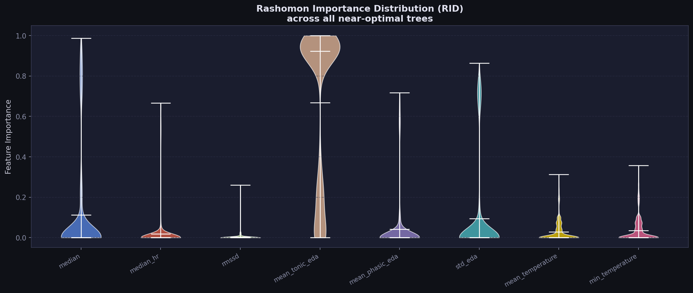
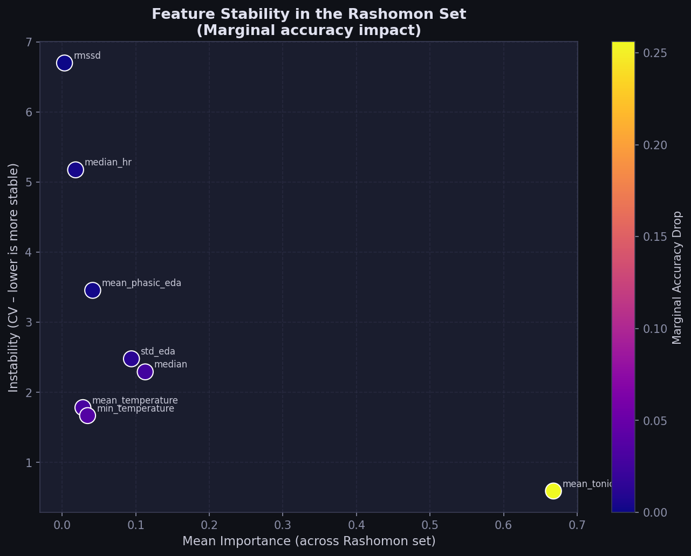
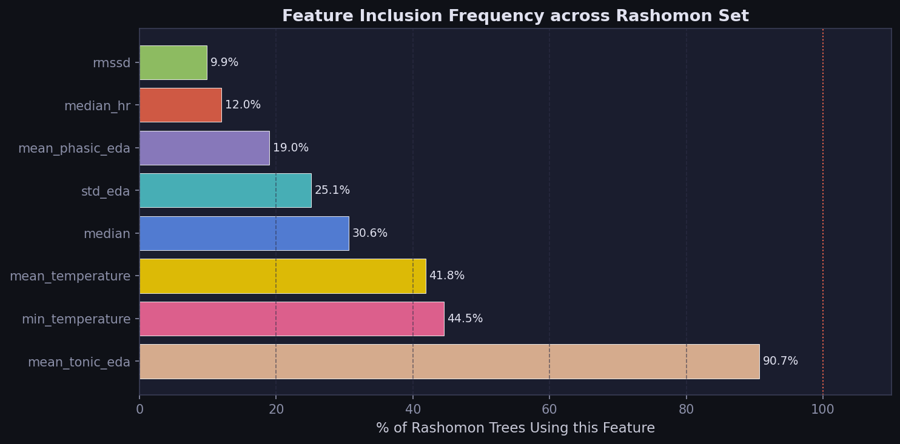
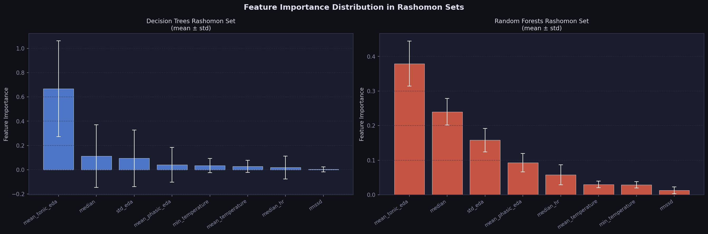
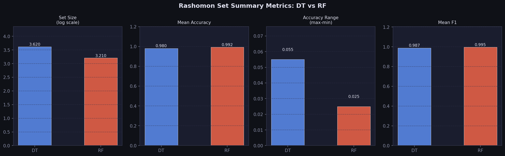

1,000
Total Windows
8
Sparse Features
…
Rashomon Set (DT)
…
Rashomon Set (RF)
…
Ref. Accuracy (DT)
5%
Rashomon ε
What is the Rashomon Set?
Core concept from the paper
The Rashomon set is the collection of all models that perform nearly as well as the best model (within ε = 5%). Instead of selecting a single "optimal" tree, we explore the entire space of near-optimal sparse decision trees. This reveals:
- Which features are universally important
- Which features are conditionally important
- How many equally-good models exist
- The tradeoff between accuracy and interpretability
Pipeline Architecture
5-step analysis workflow
🔬
Data Exploration
8 sparse features, distribution analysis
🌳
Rashomon Enumeration
4,500 DT configs × parameter grid
📈
RID Analysis
Feature importance distributions across the set
⚖️
DT vs RF Comparison
Rashomon set size, structure, stability
🪵
TimberTrek Export
JSON trie for interactive visualisation
Key Finding: Feature Dominance
Across all Rashomon trees – mean_tonic_eda is the dominant signal
Sparse Feature Set
8 selected features spanning ECG, EDA and SKT modalities
🫀 ECG
median — ECG amplitudemedian_hr — Heart ratermssd — HRV measure
⚡ EDA
mean_tonic_eda — Baseline SCLmean_phasic_eda — SCR responsestd_eda — EDA variability
🌡️ SKT
mean_temperature — Skin tempmin_temperature — Min temp
Feature Distributions
KDE plots – Pre-medication (blue) vs Post-medication (orange)

Feature Correlation Matrix
Pearson correlations across the 8 sparse features

Feature Box Plots by Modality
Normalised feature spread for pre vs post medication

…
Trees in Rashomon Set
…
Set Max Accuracy
…
Set Mean Accuracy
…
Set Min Accuracy
Depth & Leaves Distribution
Structural characterisation of the Decision Tree Rashomon set

Rashomon Set – Feature Frequency
% of Rashomon trees that use each feature in at least one split
Accuracy Distribution
All models within ε=5% of the reference optimal tree

Rashomon Importance Distribution (RID)
Violin plots of feature importance across all 4,171 near-optimal trees

Stability vs Mean Importance
CV (instability) vs mean importance. Colour = marginal accuracy impact.

Feature Inclusion Frequency
% of Rashomon trees that actively use each feature

Marginal Accuracy Drop (Leave-One-Feature-Out)
How much accuracy is lost when each feature is permuted across 200 sampled trees
Summary Metrics
Key differences between Decision Tree and Random Forest Rashomon sets
| Metric | Decision Tree | Random Forest | Winner |
|---|---|---|---|
| Loading… | |||
Accuracy Distribution: DT vs RF Rashomon Sets
Each bar represents one model in the corresponding Rashomon set
Feature Importance: DT vs RF
Mean ± std feature importance across each Rashomon set

Summary Bar Chart
Set size (log), accuracy, range and F1 comparison

Interactive Tree Explorer
Browse and inspect individual trees from the Rashomon set (top 200 by accuracy)
… trees shown
Loading trees…
Selected tree structure
Click a tree on the left to view its structure…
TimberTrek Integration
Visualise the Rashomon set interactively using the TimberTrek tool
📁 Exported Files
📄
outputs/timbertrek/dashboard_trees.json
Top 200 Rashomon trees with rules, accuracy, FI
📄
outputs/timbertrek/rashomon_trie.json
Merged trie of all split paths (TimberTrek format)
📄
outputs/rashomon/rashomon_metadata.csv
All 4,171 trees – accuracy, depth, leaves, FI
📄
outputs/rashomon/rid_results.json
RID per feature – mean, std, CV, marginal drop
🪵 How to Use TimberTrek
- Visit poloclub.github.io/timbertrek
- Upload
rashomon_trie.json - Explore the tree space visually
- Filter by depth, accuracy, features used
- Select preferred models interactively
Trie Preview (Top-level splits)
Top 10 most common first splits across the Rashomon set